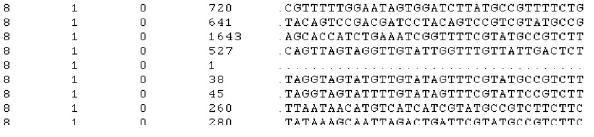
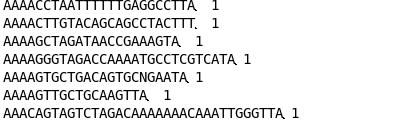

How to use SeqBuster and SeqCluster extension:
Visit our Quick tutorial at: http://code.google.com/p/seqbuster/wiki/Quick
Remember that you have tips for each step and parameter by clicking on each "?" orange button
- Create a project. This is a mandatory step to analyze the sequencing data in a group of experiments or sequenced samples. Go to the "Create project" button
- Load the project. Type the name of your project in the box and click "load project"
- Now you can upload a sample in two ways:
- Remove the adapters from the reads using the stand-alone version. This will create a file containing unique sequences. The input file looks like (you have a link in this panel to a test file):

- Sequences without adapter: if you already have removed the adapter, you can upload the file directly. Go to the "upload trimmed reads" button and follow the instructions .The input file looks like:

- miRNAs detection by clicking on "miRNA annotation" button. To test the analysis, run with the default parameters.
- miRNA analysis by clicking on "miRNA analysis" button and follow the instruction. To learn about what each package download http://estivill_lab.crg.es/seqbuster/examples/tutorial4.pdf and go to "Manual" option in the top menu.
- non-miRNA small RNAs detection by clicking on "small RNA detection" button. To test the analysis, run with the default parameters. You will have link to example files to run this analysis completely in this panel.
- non-miRNA small RNAs analysis by clicking on "Do usRNA analysys" button and then select the fisrt option "start analysis". This package will create in the project/sample folder the following results:
- Amount of each type of usRNAs
- Length distribution of usRNAs
- Length distribution of each usRNAs type and sub-type
- Fasta files containing sequences of each usRNAs type and sub-type
- Relative positions of each usRNAs on its putative source molecule
- You can do a differential expression analysis between sample or group of samples selecting in each list the samples to be compared and then clicking on "Calculate". A table with each cluster id, ratio and p-value will appear. You can export the data to a file for custom analysis.
- non-miRNA small RNAs analysis II by clicking on "Do usRNA analysys" button and then select the fisrt option "claculate" after select the samples to be used. Here you can do a differential expression analysis between samples or group of samples.
- Manage data by clicking on "Manage data" button. Here you can reset, delete or browse any sample after been analyzed.